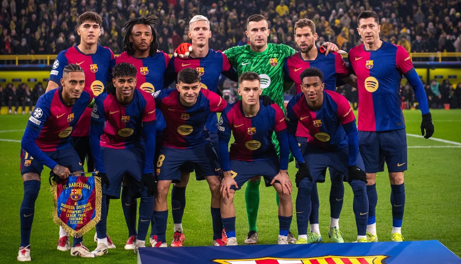
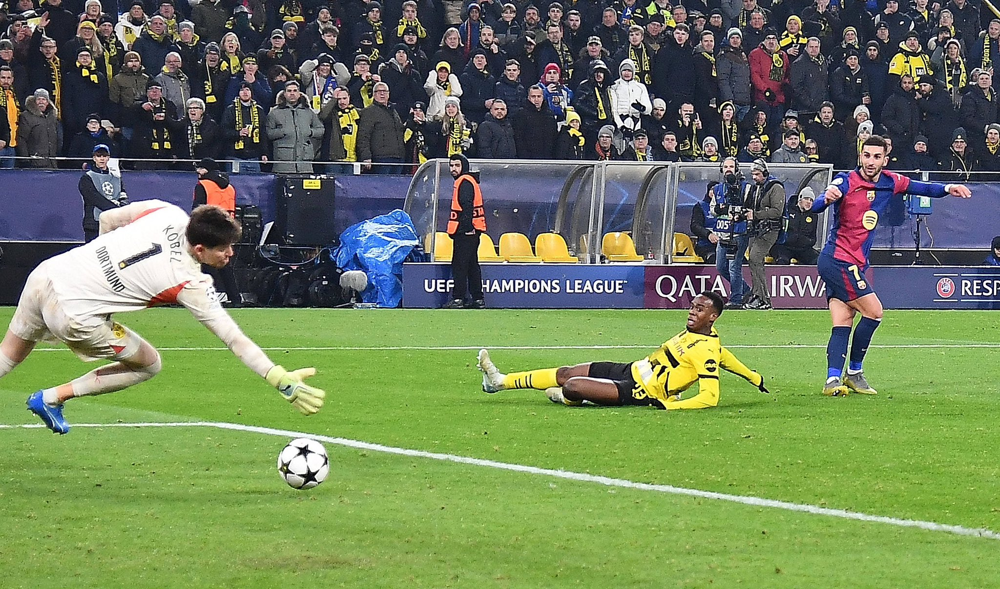

Barcelona akhirnya memutus tren negatif mereka di tanah Jerman dengan kemenangan dramatis 3-2 atas Borussia Dortmund dalam pertandingan fase grup Liga Champions di Signal Iduna Park. Kemenangan ini menjadi yang pertama bagi Blaugrana di Jerman setelah delapan tahun penantian Pertandingan berlangsung sengit, jual-beli serangan terus terjadi sejak peluit awal dibunyinkan, namun kedua tim gagal memanfaatkan peluang-peluang yang tercipta, skor kacamata bertahan dibabak pertama.
Barcelona Akhiri Kutukan di Jerman, Menang Tipis 3-2 atas Dortmund


Memasuki babak kedua, intensitas pertandingan meningkat. Barcelona membuka keunggulan lebih dulu melalui gol Raphinha di menit ke-53, yang memanfaatkan umpan terobosan dari Dani Olmo. Namun, pada menit ke-63 Dortmund mendapatkan hadiah penalti setelah Pau Cubarsi melanggar Sehrou Guirassy, skor berubah menjadi 1-1 setelah tendangan Sehrou Guirassy gagal ditepis.
Duel semakin memanas saat Barcelona kembali memimpin melalui gol Ferran Torres pada menit ke-75, tetapi Dortmund tidak tinggal diam. Memanfaatkan kesalahan lini belakang Barcelona, Sehrou Guirassy kembali mencetak gol setelah memanfaatkan umpan Pascal Gross yang lolos dari Offside Trap.
Ketika pertandingan tampak akan berakhir imbang, Barcelona berhasil memanfaatkan serangan balik cepat, Ferran Torres mencatatkan kembai nama nya di papan skor setelah mencetak Brace pada menit ke-85. Kemenangan ini tidak hanya memperpanjang catatan positif Barcelona di Liga Champions musim ini, tetapi juga mengakhiri rekor buruk mereka di tanah Jerman, di mana mereka terakhir kali menang delapan tahun lalu. Pelatih Hansi Flick memuji permainan timnya seusai laga.
"Hal yang paling positif adalah penguasaan bola di babak pertama; Kami ingin mengendalikan permainan dan kami berhasil melakukannya. Pergantian juga penting, dengan Ferran, Fermín… mereka bermain bagus dan langsung mencetak gol kedua. Tim percaya pada dirinya sendiri.” ujar Flick.
Dengan kemenangan ini, Barcelona memiliki peluang besar untuk lolos ke babak selanjutnya, hanya membutuhkan 1 kemenangan lagi untuk memastikan diri di babak 16 besar. Pertandingan selanjutnya Barcelona akan bertandang ke Benfica pada 22 Januari, dan menjamu Atalanta dikandang pada 30 Januari.
Contact Us
If you have any inquiries or want to collaborate with RF ExtraNews, don't hesitate to get in touch!
Email Us